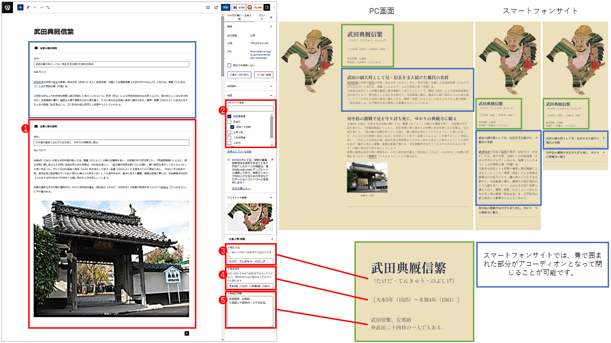
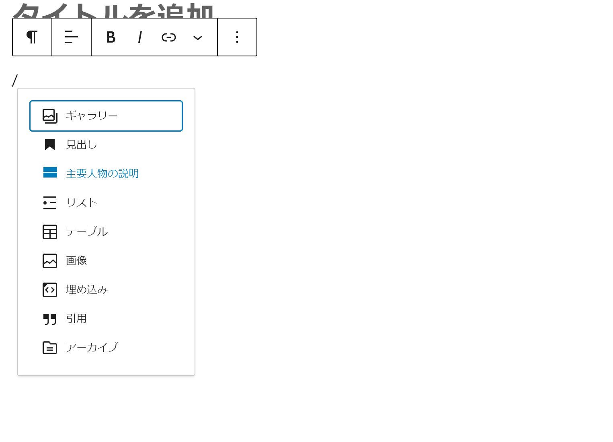
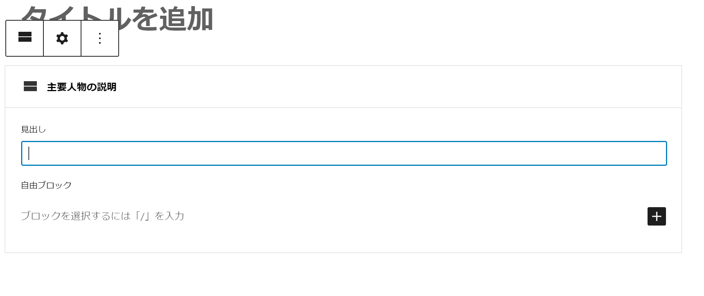
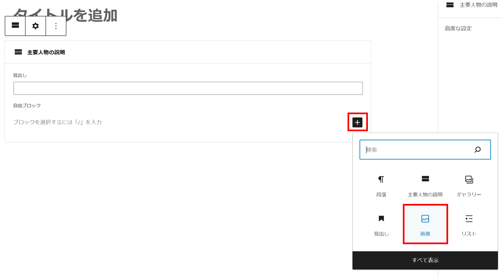
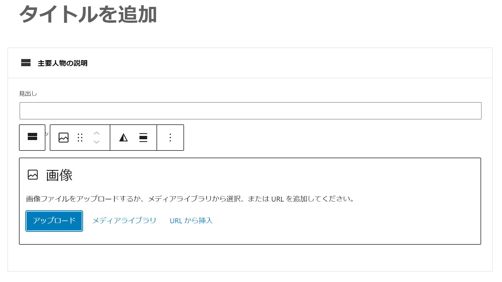

【川中島の戦い】総合サイト
【川中島の戦い・主要人物】WordPress更新マニュアル
2024.3.15 更新
メニュー
主要人物を登録する
- 画面上部の「新規投稿を追加」をクリックします。
- ▼「川中島の戦い・主要人物」新規登録画面

- 説明文*（必須）
主要人物の説明文になります。
説明文を入力する際は、ブロックを挿入したいところで、「/」（半角スラッシュ）を入力してください。
「主要人物の説明」の追加方法

「/」（半角スラッシュ）を入力して表示されたリストの中から、「主要人物の説明」を選択します。

上記画像の「見出し」にブロックごとの見出しを、その下の「自由ブロック」に本文を入力します。
スマートフォンサイトでは、このブロックごとに折りたためるアコーディオンとなります。
ブロック内に画像を挿入する際は、画像を挿入したいところで、「画像ブロック」を追加してください。
「画像ブロック」の追加方法

「＋」ボタンを押して「画像」をクリックします。

画像入力用のブロックが作成されるので、任意の画像を選択してください。
※画像の詳しいアップロード方法はこちら
※画像のリサイズ方法はこちら
- カテゴリー
人物のカテゴリーを選択します。
「川中島の戦い・主要人物」一覧でカテゴリー分けされて表示されます。
- 人物名 かな
「し・めい」の形式で入力してください。
- 人物生没年
「大永5年（1525）～永禄4年（1561）」 このような形式で記入してください。
生年不明 → 「生年不詳」
没年不明 → 「没年不詳」
両方わからない場合は「生年・没年不詳」としてください。
- 人物補足情報
人物の別名などがあれば適宜入力します。
武田二十四将の場合は、「※武田二十四将の一人でもある。」と入力してください。
- 公開*（必須）
青い「公開」ボタンを押してください。記事が公開されます。
公開日時が新しいものから順番にHP上に並びます。
- 公開した「イベント情報」を編集・削除する
※編集方法はこちら